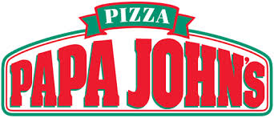

Papa John's es una cadena de restaurantes de pizza fundada en 1984 por John Schnatter en Estados Unidos. Comenzó en un pequeño espacio detrás del negocio de su padre y, con el tiempo, se convirtió en una de las pizzerías más famosas del mundo. La empresa es conocida por su lema “Better Ingredients. Better Pizza.” y por vender pizzas, alitas y su popular salsa de ajo. Nuestro objetivo es que cada cliente viva una experiencia única, donde el amor se convierta en sabor y cada momento se vuelva inolvidable.